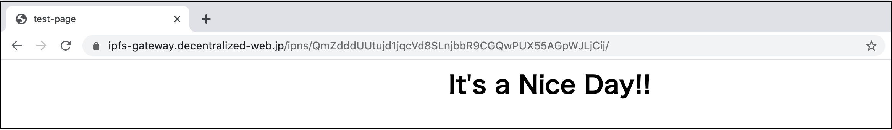
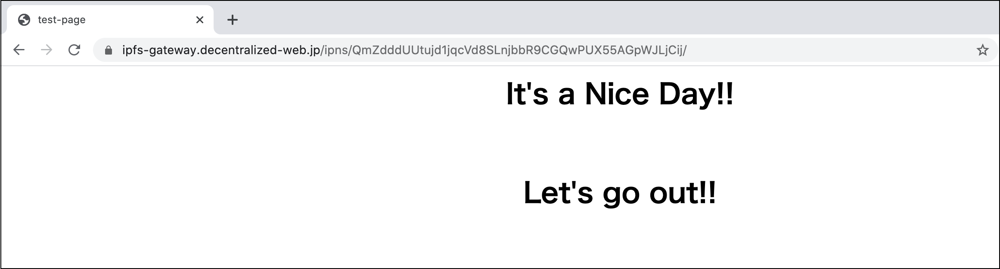

IPNSとDNSLink #
これまでIPFSの特徴であるコンテンツ指向のプロトコルは、コンテンツの内容により一意にハッシュ値が決まり、そのハッシュ値によりコンテンツにアクセスする旨を記載してきました。これは IPFSとは何か？でお伝えした通り、ファイルの改竄などを防ぐ有効な手立てとなっています。
しかし、コンテンツのハッシュ値によるアクセスだけでは不都合が生じる場合もあります。それはコンテンツを更新した場合です。一般的にWeb上のコンテンツは更新や追加がしばしば行われます。その度にアドレスが新しいハッシュ値となってはかなり煩わしい事態になります。
そのため、IPFSではコンテンツに名前を付ける（Naming: 命名）方策がなされています。それが本節で解説するIPNSとDNSLinkとなります。両者は共にコンテンツに命名する仕組みなのですが、現在のところ、名前解決速度や可読性の高いアドレスを指定できるなどの優位性からDNSLinkがより一般的に利用されています。それぞれについて詳しく見ていきましょう。
IPNS #
IPNS（Inter Planetary Naming System）はコンテンツのハッシュ値をノードIDに紐付け、コンテンツにアクセスする際にノードIDを経由してアクセスを行うようにする仕組みです。ノードIDはノードを識別するために、重複のない世界に１つだけのIDのため、そのIDをキーとしてコンテンツへアクセスすることを行います。 コンテンツが更新されそのハッシュ値が変わった場合には、ノードIDとコンテンツハッシュの紐付けを更新することでノードIDにより更新されたコンテンツにアクセスができるようになる仕組みです。
では実際にIPNSの動作を確認していきましょう。
まずは非常にシンプルなWebページを作成してみましょう。適当なディレクトリを作成し、その中にindex.htmlを作成します。
$ mkdir test-page
$ vi test-page/index.html
index.htmlの内容は例えば以下のように編集します。
$ cat test-page/index.html
<html>
<head><title>test-page</title></head>
<body><center>
<h1>It's a Nice Day!!</h1>
</center></body>
</html>
ここで作成したディレクトリとファイルを下記のコマンドで再帰的にIPFSに追加します。
$ ipfs add -r test-page/
added QmcC9oDaHU74QgXGxdVcfa3UZVu4cWbGk8JQQRATHNHmRF test-page/index.html
added QmXi2mj3KbP6HREi9Vj5keYwTmE1VUrnVxchVyqRWBz3wL test-page
ここでIPNSの仕組みを用いて今回作ったテストページのハッシュQmXi2mj3...をノードIDに紐付けます。コマンドは下記の通りです。
$ ipfs name publish QmXi2mj3KbP6HREi9Vj5keYwTmE1VUrnVxchVyqRWBz3wL
Published to QmZdddUUtujd1jqcVd8SLnjbbR9CGQwPUX55AGpWJLjCij: /ipfs/QmXi2mj3KbP6HREi9Vj5keYwTmE1VUrnVxchVyqRWBz3wL
ここでアウトプット結果は、ノードIDQmZdddUU...に対してコンテンツQmXi2mj3...が紐付けられたことを示しています。ノードIDに紐付けられたコンテンツはgatewayを通じて下記のURLからアクセスが可能になります。
https://ipfs-gateway.decentralized-web.jp/ipns/QmZdddUUtujd1jqcVd8SLnjbbR9CGQwPUX55AGpWJLjCij/
ここでURLのドメイン以下の最初の部分に注意してください。これまでのアクセスではこの部分はipfsでしたが、IPNSでのアクセスを行う場合はipnsを指定することになります。

IPNSの仕組みはページのコンテンツが更新されても同一のアドレスでアクセスを可能にするものでした。その動きを確かめましょう。コンテンツを下記の様に内容に追加し、再度ipfs addコマンドでIPFSにコンテンツを共有します。
$ cat test-page/index.html
<html>
<head><title>test-page</title></head>
<body><center>
<h1>It's a Nice Day!!</h1>
<br/>
<h1>Let's go out!!</h1>
</center></body>
</html>
$ ipfs add -r test-page/
added Qmait5a9gaeFcxV4da7F4kny2NsdCfH1Gjs7YrthizZk23 test-page/index.html
added QmZpEhNpd7MCrFrMLKHnvwXSxcjMDYwcGJgkfjg9Z7yy42 test-page
先ほどとコンテンツの内容が変わったため、ハッシュ値も先ほどのものから変化しています。IPNSでは下記のようにipfs name publisコマンドにより更新後のハッシュ値を再度、ノードIDに紐付けなおすことで、更新後のコンテンツも依然と同じアドレスでアクセスできる様にします。
$ ipfs name publish QmZpEhNpd7MCrFrMLKHnvwXSxcjMDYwcGJgkfjg9Z7yy42
Published to QmZdddUUtujd1jqcVd8SLnjbbR9CGQwPUX55AGpWJLjCij: /ipfs/QmZpEhNpd7MCrFrMLKHnvwXSxcjMDYwcGJgkfjg9Z7yy42
では、先ほどと同様にgatewayを通じて先ほどと同一の下記のURLからアクセスしてみましょう
https://ipfs-gateway.decentralized-web.jp/ipns/QmZdddUUtujd1jqcVd8SLnjbbR9CGQwPUX55AGpWJLjCij/
下図のように同一URLで更新後のコンテンツが閲覧できることが見てとれます。
